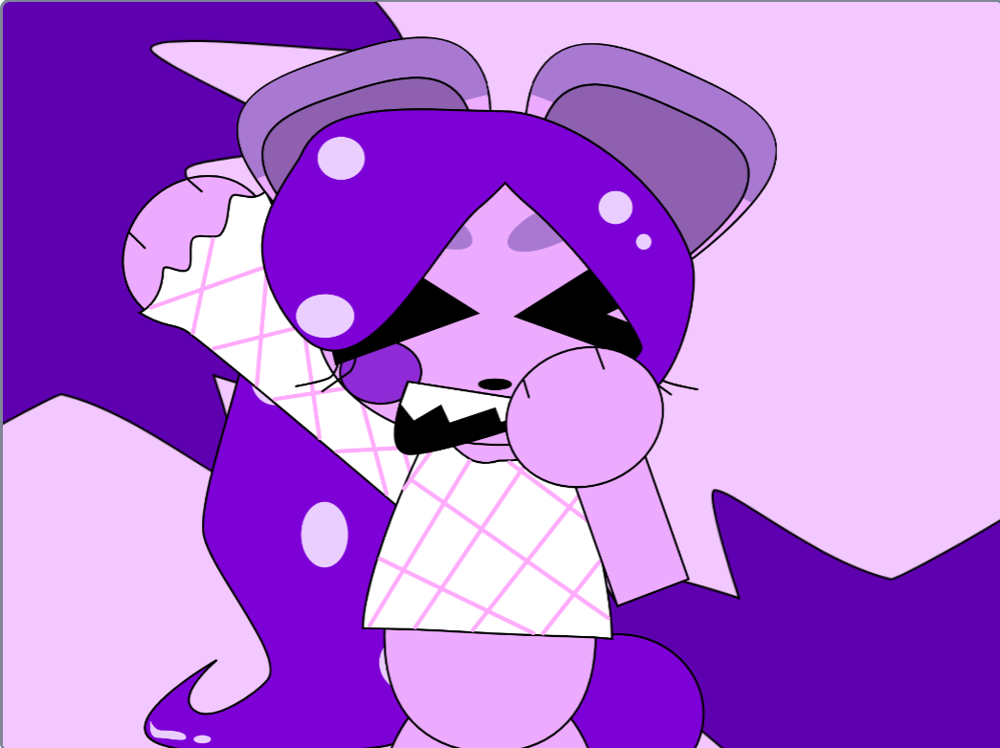
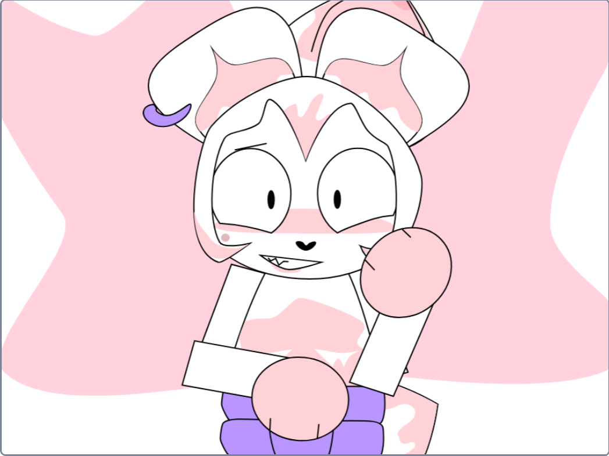

CHOOSE YOUR CHARACTER
Don't know what Flavor Frenzy is? Click here!
STARFRUIT

Starfruit is an amateur ninja who still has a lot to learn, but she could still be a powerful bear!
Stats:
Ability: Star Shurikens
Weakness: Too much of a pacifist
FLAN

Flan is a cheerful and outgoing bear who always has a positive outlook on life and everything!
Stats:
Ability: Light Magic (Can be paired with Ube)
Weakness: Has the "I can fix them" mindset
UBE

Although his twin brother Flan is always happy, Ube is always sad and depressing, but deep down he still loves his brother very much!
Stats:
Ability: Dark Magic (Can be paired with Flan)
Weakness: Emo
PINEBERRY PINEBERRY PINEBERRYYYYYYYYYY-(Sorry I got carried away)

Pineberry is usually snooty and bossy, but it's always hard to say no to a cute bear like him!
Stats (Pineberry):
Ability: Spellbook (Summoning magic which summons Pineberry's Spirit)
Weakness: Sometimes dozes off

Stats (Spirit):
Ability: Brute Force
Weakness: After 10 seconds, it disappears
OKRA

Okra is a sherrif who means business but is usually chill and laid back.
Stats:
Ability: Revolvers
Weakness: He can't help but go "Back in my day-"
CANDY CORN

A cheerful and spry jester who hosts an annual Halloween carnival, Candy Corn is the life of the party!
Stats:
Ability: Summons Spiky Balls
Weakness: Can get too crazy
JAM

An avid clothes designer with an eye for design, Jam always finds the best fit for everyone!
Stats:
Ability: Will stay in the air longer with her umbrella
Weakness: Could get carried away by the wind
MAYONNAISE-I mean WHIPPED CREAM- I mean MERINGUE

Unlike his best friend Jam who's not afraid to show her talent, Meringue is more introverted and shy. Despite this, he's a very skilled hairdresser!
Stats:
Ability: Spraycan
Weakness: Can easily go into panic attacks
Want to know the total stats of any character on the page? Try out the Charac-ulator!
Note: Case sensitive, and for every character with two words in their name, there is no space but both words are still capitalized"
Go to the Mainpage